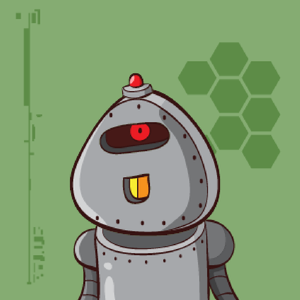
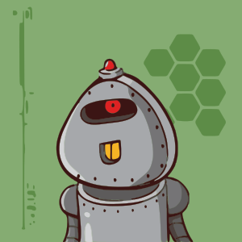
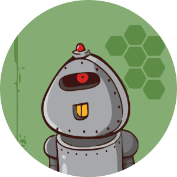

avatar-original.png
avatar.svg
avatar-circle.svgThe vectors are the author's own traced SVGs — full-detail, not a simplification. Use them at any size; the raster original stays available for platforms that want a PNG.